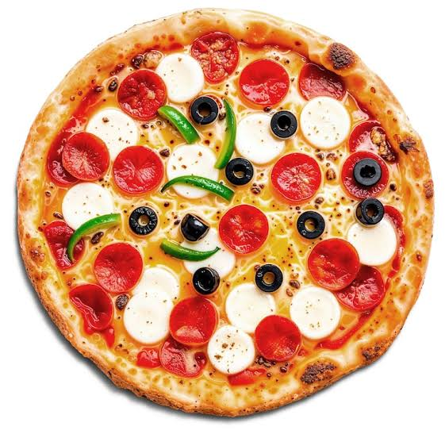

Pizza
Back to Home

Italian Pizza with the original recipe
Description
Pizza is a traditional Italian dish that has become popular worldwide.
It consists of a round, flat base of dough topped with various ingredients such as tomato sauce
, cheese, vegetables, and meats. The pizza is then baked in an oven until the crust is golden and the cheese is
melted and bubbly.
Ingredients
- 1 1/2 cups warm water (110°F)
- 2 1/4 teaspoons active dry yeast
- 3 1/2 cups all-purpose flour
- 2 tablespoons olive oil
- 2 teaspoons salt
- 1 teaspoon sugar
- 1/2 cup tomato sauce
- 2 cups shredded mozzarella cheese
- Toppings of your choice (pepperoni, mushrooms, bell peppers, onions, etc.)
Instructions or Steps
- Step 1: In a small bowl, combine warm water and yeast. Let it sit for 5 minutes until it
becomes frothy.
- Step 2: In a large mixing bowl, combine flour, olive oil,
salt, and sugar. Add the yeast mixture and knead until a smooth dough forms.
- Step 3: Cover the dough with a damp cloth and let it
rise in a warm place for about 1 hour or until it doubles in size.